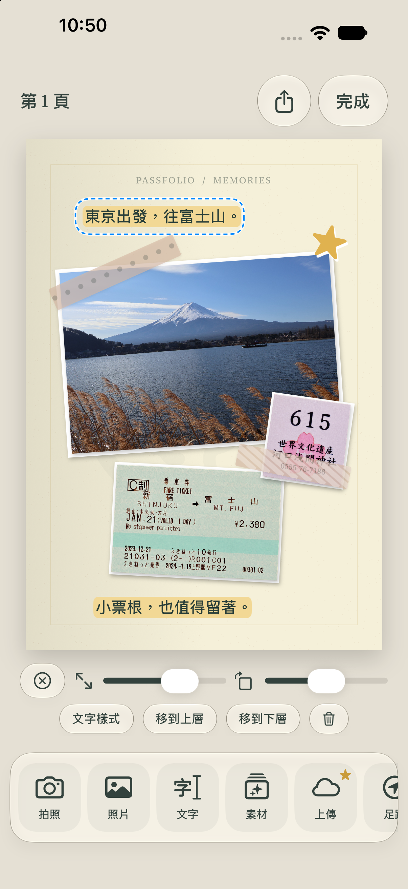
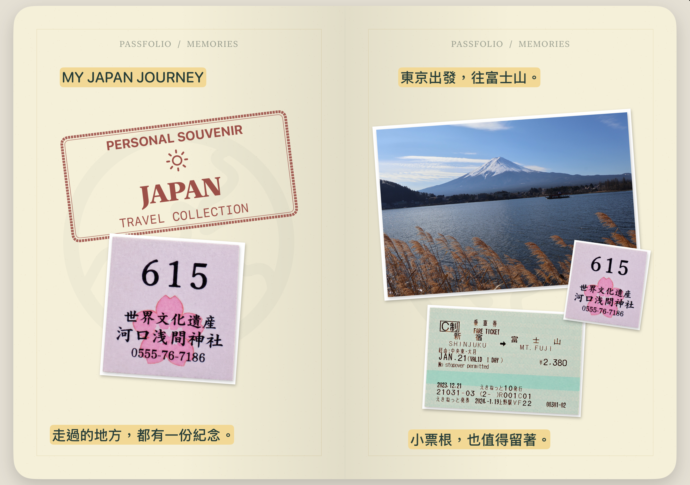
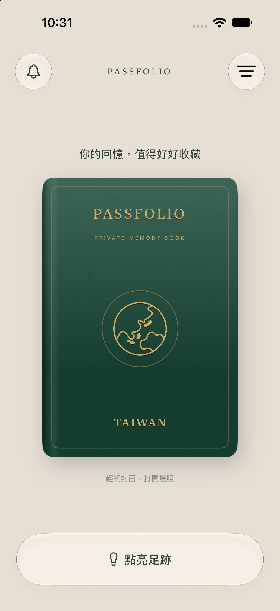
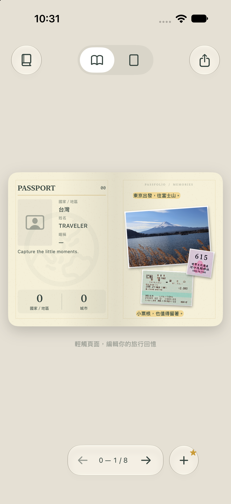
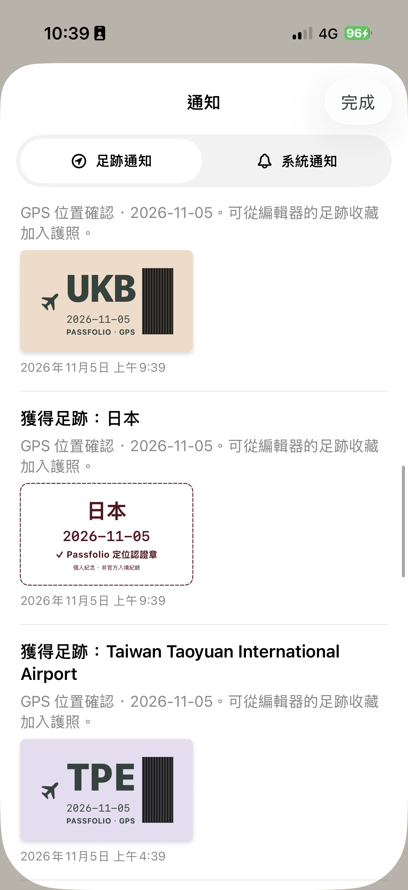
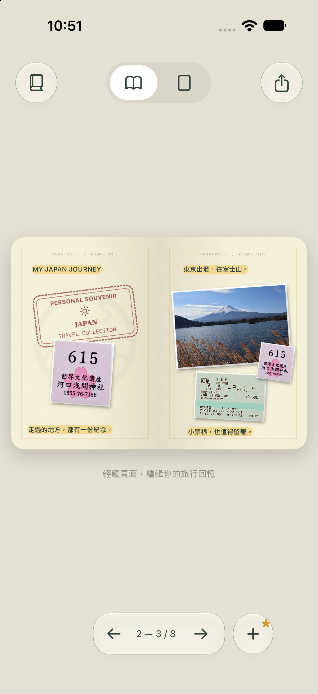

01 · 自由編排旅行手帳
照片、票根、文字，
怎麼放，都由你。
加上紙膠帶與貼紙，調整位置、大小和角度，
把旅行片刻排成自己的樣子。




一張照片、一段心情、一枚旅行足跡，
讓那些小小的片刻，成為隨時能翻開的回憶。
01 · 自由編排旅行手帳
加上紙膠帶與貼紙，調整位置、大小和角度，
把旅行片刻排成自己的樣子。

02 · 收集旅行足跡
造訪國家、城市與機場，收集專屬足跡。
從足跡收藏選一枚，貼進手帳，自由安排位置。

03 · 翻閱與分享回憶
雙頁翻閱你的旅程，
也能分享給想一起回味的人。

帶上 Passfolio，記錄旅行中的美好片刻。
↗即將於 App Store 推出Passfolio for iPhone下載入口將於 App 正式上架後開放。
歡迎分享使用心得與功能建議。
聯絡信箱：jstudio0430@gmail.com